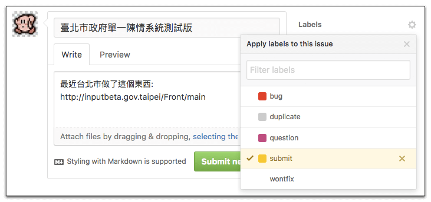

遊戲規則
- 登入 g0v 的 Slack 聊天室。若還沒有帳號，可利用 join.g0v.today 加入
- 在 g0v 的 Slack 群組中，進入 #general 頻道。
- 將你想分享的連結貼上，並輸入「#submit」識別用標籤；你也可以附帶一些評論，例如：

- 接著，送出留言！
- 在 5 ~ 10 分鐘內，你便可以在 這裡 看到你分享的連結。
然後呢？
送出以後，揪松電子報小編會挑選並編輯其中的連結，未來便會在揪松電子報中出現囉！
翻閱電子報
過往的揪松團電子報可以在 這個連結 中看到，若你覺得連結不方便記憶，也可以直接在 揪松網 下方找到電子報的相關資訊。揪松團電子報使用 Mailchimp 服務發送，欲訂閱電子報請利用下面的訂閱表單：
其它機制
若你熟悉 Github 並有 Github 帳號，你也可以直接以建立 Issue 的方式來投稿：
- 登入 Github
- 開啟 Submit 專案的 Issue 列表
- 點擊右方的「 New Issue 」按鈕建立新 Issue
- 除了投稿連結，也請填入妥善的標題與描述。務必替 Issue 加上黃色的「submit」標籤：
- 接著，將 Issue 送出，便完成投稿囉！